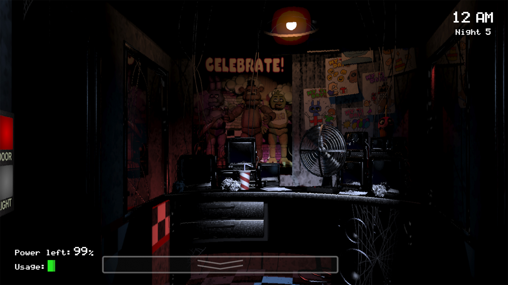
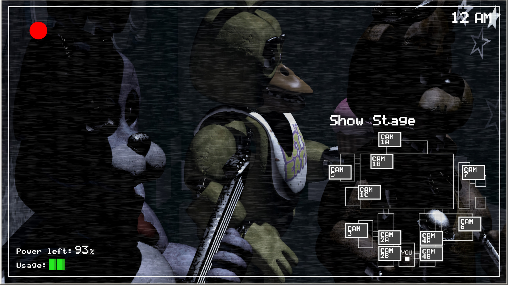
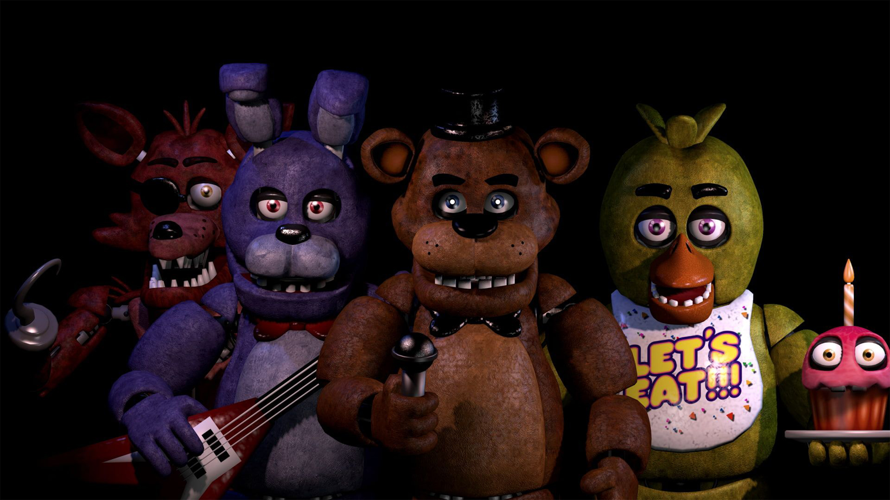
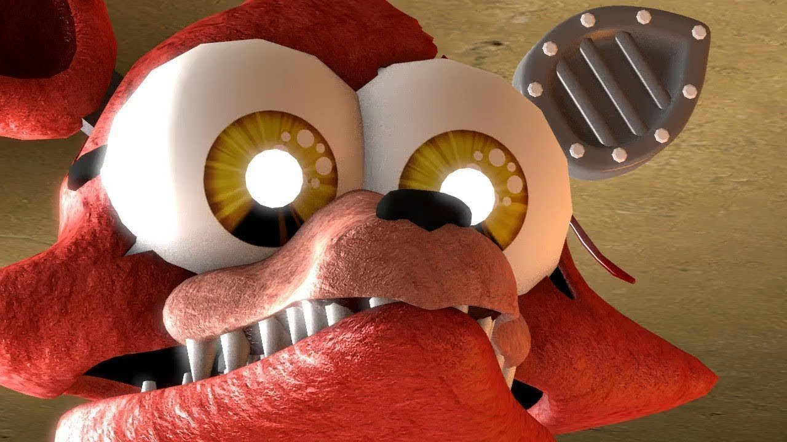
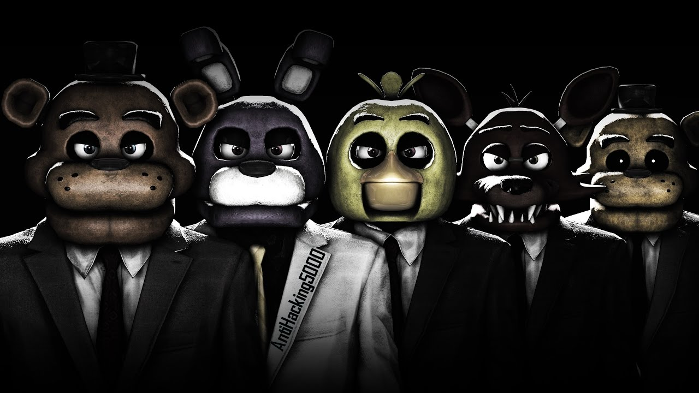
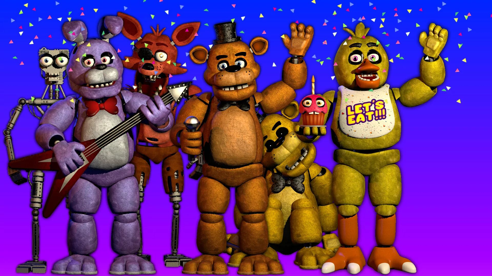
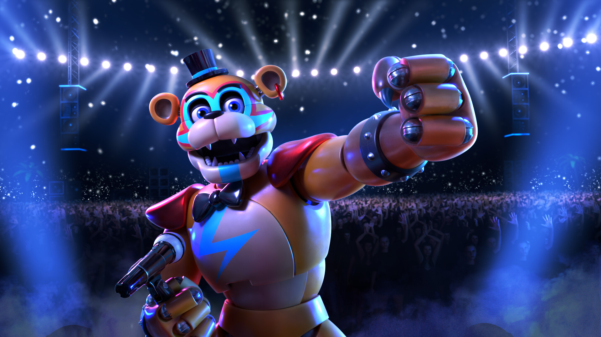
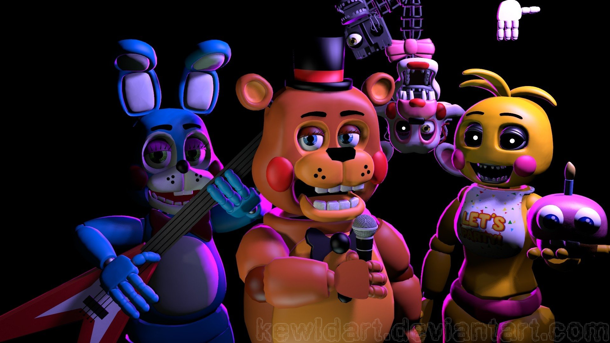
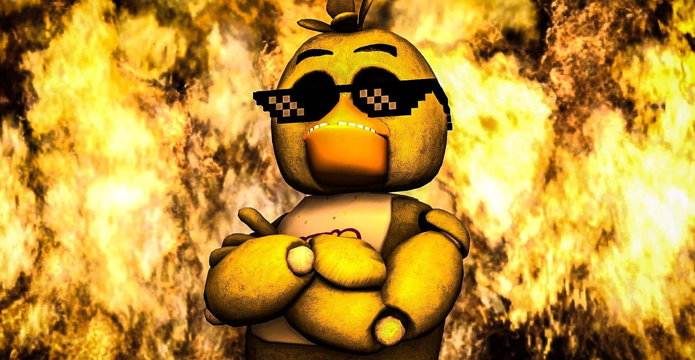

Главный герой первой игры — охранник Майк Шмидт. Его нанимают
посторожить «Пиццерию Фредди Фазбера» на протяжении пяти ночей —
с полуночи до шести утра. По договоренности с работодателем Майк
получит зарплату, только если проведет в пиццерии все рабочие будни.
В подсобке здания хранятся аниматроники — роботы-куклы в виде зверей,
которые развлекают посетителей песнями и танцами.
В первую же ночь главному герою звонит предыдущий охранник этого
места, имя которого не называют: фанаты прозвали персонажа Телефонным
Парнем. Он предупреждает Майка, что с полуночи до утра аниматроники
ходят по пиццерии из-за ошибки в их моторах. Если куклы видят живого
человека, они считают его аниматроником без костюма и убивают.
Задача Майка — не попасться аниматроникам и дожить до утра. Для этого
он должен наблюдать за аниматрониками по камерам в разных комнатах
и следить за их перемещениями. Роботы меняют расположение каждый раз,
когда герой переключает камеру или отворачивается от монитора.
Отбиться от монстров не получится: героя спасет только закрытие двери.
Если он упустит аниматроника и вовремя не запрется, персонажа убьют.
Игровой процесс FNAF простой, практически ритмичный. Главный герой
находится в маленькой комнате охранника с двумя металлическими
дверьми, монитором, кнопками включения света и ограниченным запасом
энергии. Электричество тратится на закрытие дверей, поэтому отсидеться
взаперти всю ночь не получится. Запас энергии быстро заканчивается,
а ведь электричество нужно и для освещения боковых коридоров.
Без лампы игрок не увидит хищные глаза аниматроников.
Дожить до утра легче, чем кажется на первый взгляд. Скажем, в первую ночь
на Майка охотится только один аниматроник — синий кролик Бонни.
Подразумевается, что в первую ночь игрок освоит геймплей и поймет, что
нужно делать. Постепенно сложность игры повышается. Уже в третью ночь
движутся все аниматроники — приходится быстро переключать камеры,
чтобы не попасться одному из них.
Аниматроники ведут себя по-разному. Кролик Бонни и цыпленок Чика
действуют предсказуемо и медленно. Каждую ночь они ходят по одним
и тем же комнатам и долго готовятся к атаке. Лис Фокси же стремительно
бежит со своего места прямо в охранную комнату: у игрока есть лишь две
секунды, чтобы заметить врага и запереться.
Самый непредсказуемый аниматроник в игре — медведь Фредди, в честь
которого и назвали пиццерию. Траекторию его движения по комнатам
нельзя предугадать. Вдобавок этого робота нельзя увидеть в коридоре:
медведь появляется только на камерах.
Игра формально заканчивается на пятой ночи: главному герою вручают чек
на 120 долларов. Но Майк Шмидт может остаться еще на два дня.
С окончанием шестой ночи он заработает еще 120 долларов и 50 центов.
А на седьмую ночь игрок уже сможет настроить искусственный интеллект
аниматроников и повысить сложность. После седьмой ночи Шмидт
получает извещение об увольнении за «вмешательство в работу
аниматроников, общий непрофессионализм и запах».
Эта концовка заставила игроков задуматься о том, кто главный герой
на самом деле и почему начальство отдельно упомянуло его запах. Так
фанаты стали строить теории, собирать предысторию и факты о вселенной.
Позже Скотт выпустил еще три номерные части с похожим игровым
процессом и несколько спин-оффов. А в Sister Location и Security Breach
он развил идеи и усложнил геймплей: теперь игрок не ограничен одной
комнатой и сам исследует локации. Сюжет в следующих играх становился
все сложнее и запутаннее, но фанатам они понравились еще больше.








